SCAVENGING PUMP > INSTALLATION |
| 1. INSTALL SCAVENGING PUMP ASSEMBLY |
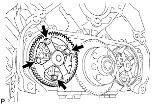 |
Install the scavenging pump with the 4 bolts.
| 2. INSTALL REAR CRANKSHAFT OIL SEAL |
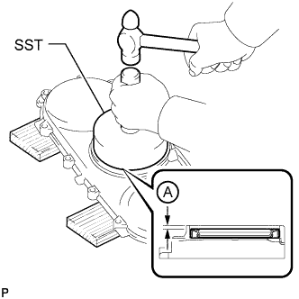 |
Place the oil seal retainer on wooden blocks.
Using SST and a hammer, tap in a new oil seal as shown in the illustration.
| 3. INSTALL REAR ENGINE OIL SEAL RETAINER |
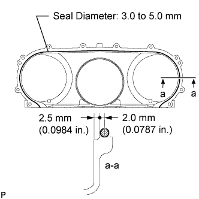 |
Apply seal packing in a continuous line as shown in the illustration.
Apply engine oil to the oil seal lip.
Make sure that the lip of the oil seal is properly installed.
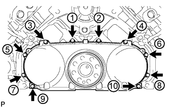 |
Install and uniformly tighten the 10 bolts in the order shown in the illustration.
| 4. INSTALL NO. 1 OIL PAN SUB-ASSEMBLY |
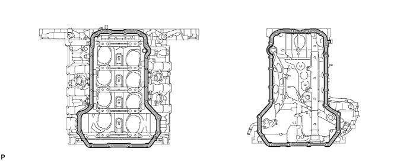
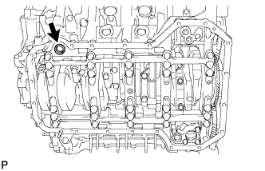 |
Install the cylinder block oil hole gasket.
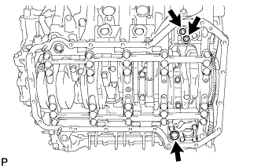 |
Apply a light coat of engine oil to 3 new O-rings and set the 3 O-rings to the oil regulator and scavenging pump.
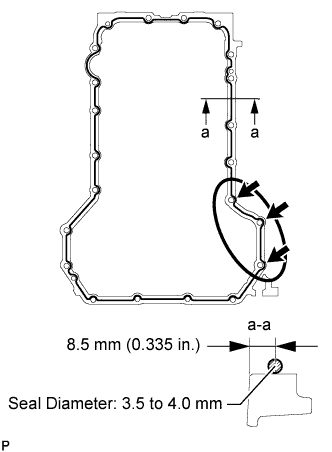 |
Apply seal packing to the No. 1 oil pan as shown in the illustration.
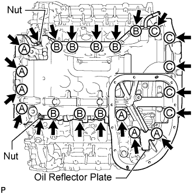 |
Install the No. 1 oil pan and oil reflector plate with the 20 bolts and 2 nuts.
| Item | Quantity | Length |
| Bolt A | 7 | 70 mm (2.76 in.) |
| Bolt B | 8 | 20 mm (0.787 in.) |
| Bolt C | 5 | 30 mm (1.18 in.) |
| 5. INSTALL OIL STRAINER SUB-ASSEMBLY |
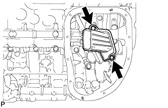 |
Apply a light coat of engine oil to a new O-ring, and install it to the oil strainer.
Install the oil strainer with the 2 bolts.
| 6. INSTALL NO. 2 OIL PAN SUB-ASSEMBLY |
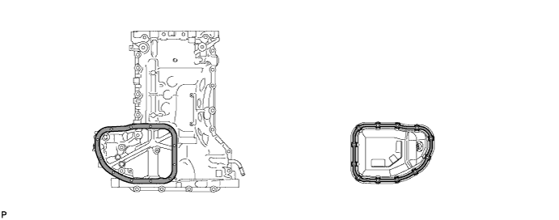
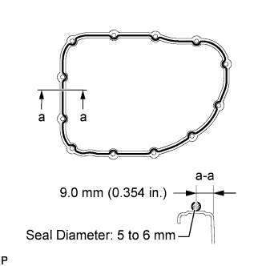 |
Apply seal packing to the No. 2 oil pan as shown in the illustration.
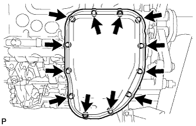 |
Install the No. 2 oil pan with the 10 bolts and 2 nuts.
| 7. INSTALL ENGINE OIL LEVEL SENSOR |
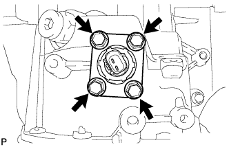 |
Install a new gasket and the sensor with the 4 bolts.
| 8. INSTALL OIL FILTER BRACKET SUB-ASSEMBLY |
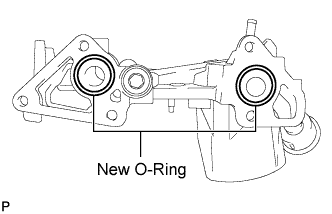 |
Apply a light coat of engine oil to 2 new O-rings, and set them to the oil filter bracket.
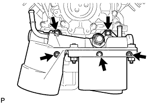 |
Install the oil filter bracket with the 3 bolts and 2 nuts.
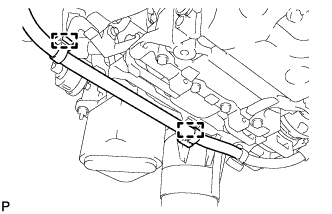 |
Connect the 2 wire harness clamps.
| 9. INSTALL OIL FILTER ELEMENT |
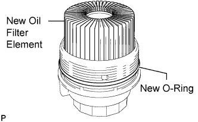 |
Clean the inside of the oil filter cap, its threads and its O-ring groove.
Apply a small amount of engine oil to a new O-ring and install it to the oil filter cap.
Set a new oil filter element in the oil filter cap.
Remove any dirt or foreign matter from the installation surface of the engine.
Apply a small amount of engine oil to the O-ring again and temporarily install the oil filter cap.
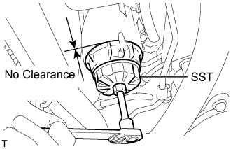 |
Using SST, tighten the oil filter cap.
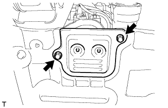 |
Install the No. 2 engine under cover seal to the No. 2 engine under cover with the 2 bolts.
| 10. INSTALL TIMING GEAR COVER SPACER |
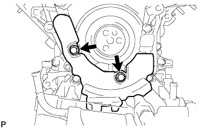 |
Install the timing gear cover spacer with the 2 bolts.
| 11. INSTALL CRANKSHAFT PULLEY |
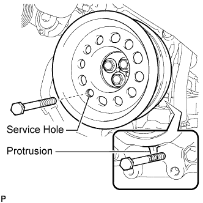 |
Align the crankshaft pulley and the crankshaft knock pin, and temporarily install the crankshaft pulley with the 3 bolts.
Install the 2 bolts to the bolt holes of the crankshaft rear side.
Using a bar, turn the crankshaft until the crankshaft pulley service hole is a little to the right of bottom dead center.
Install a 14 mm x 1.5 pitch service bolt with a length of 70 mm or more to the crankshaft pulley service hole, and hold the crankshaft using the timing chain cover protrusion.
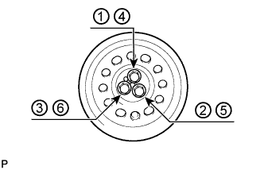 |
Uniformly tighten the 3 bolts in 2 passes in the order shown in the illustration.
Remove the service bolt.
| 12. INSTALL V-RIBBED BELT TENSIONER ASSEMBLY |
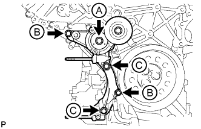 |
Install the V-ribbed belt tensioner with the 5 bolts.
| Item | Quantity | Length |
| Bolt A | 1 | 116 mm (4.57 in.) |
| Bolt B | 2 | 40 mm (1.58 in.) |
| Bolt C | 2 | 95 mm (3.74 in.) |
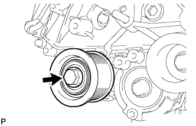 |
Install the No. 1 idler pulley with the bolt.
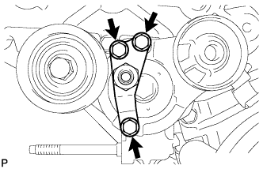 |
Install the V-ribbed belt tensioner bracket with the 3 bolts.
| 13. CONNECT NO. 2 OIL COOLER HOSE |
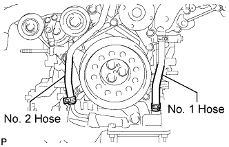 |
Align the white paint marks on the oil cooler hose and oil filter bracket and connect the hose.
| 14. CONNECT NO. 1 OIL COOLER HOSE |
Face the pink paint mark on the oil cooler hose toward the front side of the engine and connect the hose to the oil filter bracket.
| 15. INSTALL STIFFENER INSULATOR RH |
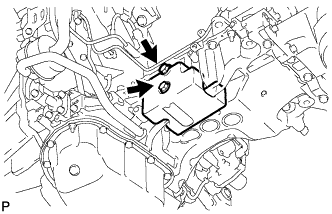 |
Install the stiffener insulator RH with the 2 bolts.
| 16. INSTALL NO. 2 INLET TURBO OIL PIPE SUB-ASSEMBLY |
 |
Install a new gasket and connect the No. 2 inlet turbo oil pipe with the union bolt.
| 17. CONNECT NO. 2 OUTLET TURBO OIL HOSE |
 |
| 18. INSTALL NO. 1 ENGINE OIL LEVEL DIPSTICK GUIDE |
 |
Apply a light coat of engine oil to a new O-ring, and install it to the No. 1 engine oil level dipstick guide.
Install the No. 1 engine oil level dipstick guide with the 2 bolts.
| 19. CONNECT NO. 1 OUTLET TURBO OIL HOSE |
 |
| 20. INSTALL GENERATOR ASSEMBLY |
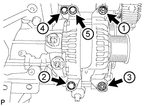 |
Temporarily install the generator with the 3 bolts and 2 nuts.
Uniformly tighten the 3 bolts and 2 nuts in the order shown in the illustration.
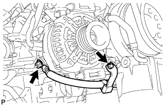 |
Connect the generator cable and install the nut and bolt.
| 21. INSTALL NO. 1 INTAKE AIR CONNECTOR PIPE |
 |
Install the No. 1 intake air connector pipe with the bolt. Then tighten the hose clamp.
 |
Connect the 4 connectors and attach the 5 wire harness clamps.
| 22. INSTALL ENGINE ASSEMBLY |
Install the engine assembly to the vehicle (Click here).
| 23. CONNECT CABLE TO NEGATIVE BATTERY TERMINAL |
Connect the cables to negative (-) main battery and sub-battery terminals.